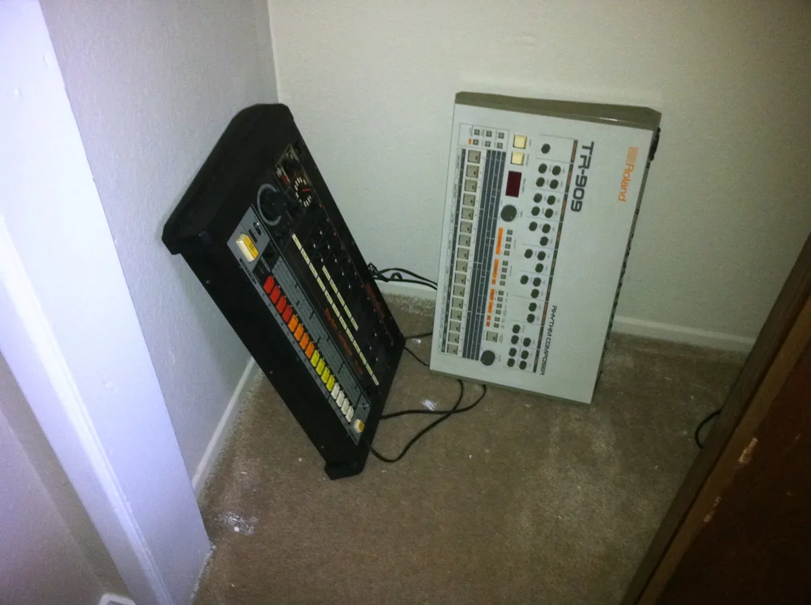
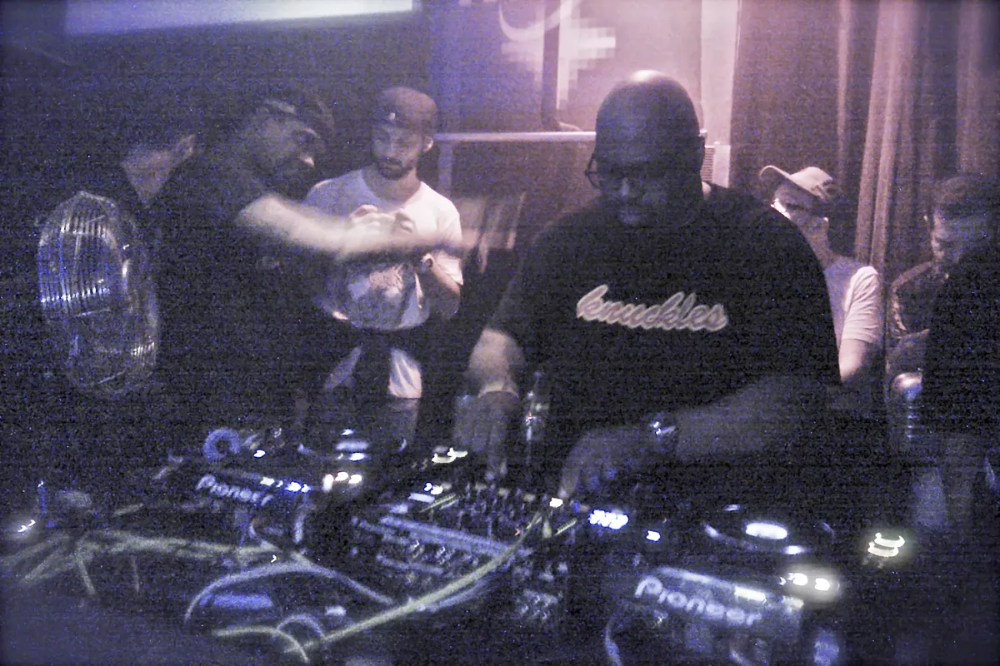
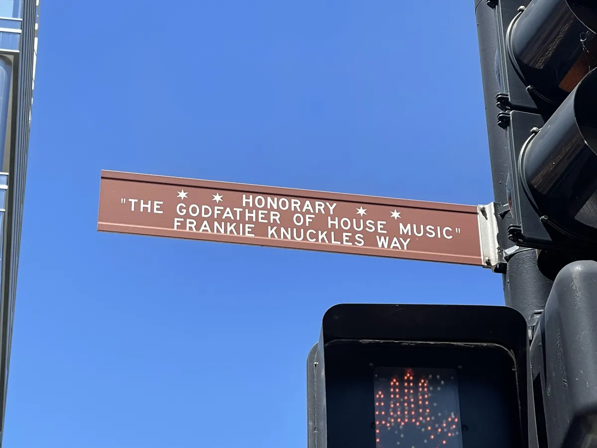
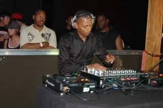

House music guide
House music: from the Warehouse in Chicago to everywhere
A DJ who re-cut disco records on tape, a club full of dancers nobody else catered for, and the records they made when nobody was making the ones they wanted.
Records nobody was making.
House began with records nobody was making any more. By 1980 disco had been declared dead in America, most loudly in Chicago, and the major labels had stopped pressing the long, rhythmic twelve-inches that dancers wanted. The DJs who still played to those dancers had to stretch what they had.
In Chicago that meant Frankie Knuckles at the Warehouse and Ron Hardy at the Music Box, cutting records together on reel-to-reel tape and running drum machines underneath them. By 1985 the people who went to those clubs were making their own tracks on cheap equipment, and a small city scene became a sound heard around the world within three years.
This guide covers what house music is, where the name comes from, the first records, the New York and British branches, and the styles that grew out of it, from deep house to afro house.
What is house music?
The shortest useful definition is a drum pattern. House puts the kick drum on every beat of the bar, which is what "four-on-the-floor" means, and plays hi-hats between the kicks and a clap or snare on the second and fourth beat. That pattern runs from the start of the track to the end, usually at somewhere between 118 and 128 beats per minute.
Everything else is open. A house record can be a gospel song with a full vocal, an instrumental made of three sounds, a disco sample on a loop or a jazz chord progression. What holds the family together is the rhythm and the purpose: records made to be mixed by a DJ into a night that does not stop.
That is also the answer to a question people ask about any dance record: what is considered house music? If the kick drum lands on every beat, the tempo sits in that range and the track is built for the floor rather than the radio, it is house or a close relative of it. Techno uses the same kick and usually runs faster, colder and with less vocal; the section on house, techno and EDM near the end sets the three side by side.
What house music sounds like.
The instruments of early house were machines built for other jobs. The Roland TR-808 and TR-909 drum machines, the TR-707 and the TB-303 bass synthesiser were sold to home musicians and struggling bands and were considered too cheap-sounding by professionals. They were exactly what a Chicago DJ with no studio budget could afford.

Records were built in layers. A drum machine pattern, a bassline from a synthesiser or a sample, a chord stab, a vocal phrase that repeats, then more elements added every eight bars so the track grows without changing its beat. The texture stays sparse: what matters in house is the low end, the kick and the bass, rather than a melody on top.
The structure is written for DJs. A club mix of a house record runs seven or eight minutes, with long intros and outros of drums alone so that the DJ can blend it into the next record. The three-and-a-half-minute radio edit came later and was always the secondary version.
Many early house tracks carry a clave rhythm in the percussion, a pattern borrowed from Latin and Afro-Cuban music, and congas and bongos appear often. The vocals, where there are any, tend to be simple phrases repeated as instructions or affirmations: jack your body, move your body, can you feel it.
The Warehouse and Frankie Knuckles.
Frankie Knuckles grew up in the Bronx and learned to DJ in New York with his friend Larry Levan at the Continental Baths in the early 1970s. In 1977 another friend, Robert Williams, opened a club in an industrial building on Chicago's west side and invited him to play. Knuckles moved to Chicago and became the resident at the Warehouse.
The Warehouse held up to 2,000 people, and the crowd was mainly Black and gay. Knuckles played Philadelphia soul, disco, Salsoul records, Italian and European electronic records and anything else that kept them dancing, and he changed how the records were played. He cut new versions of songs on reel-to-reel tape, extending the intros and the breaks, and later added a drum machine under records in the mix to make them hit harder.

Knuckles said himself that Kraftwerk were part of the recipe, mixed with the Philadelphia sound and electronic body music from Europe. Around 1983 he bought his first drum machine from Derrick May, a young DJ from Detroit who made regular trips to Chicago to hear him and Ron Hardy.
Knuckles left the Warehouse in November 1982 and opened the Power Plant. The Warehouse building became the Music Box, and Ron Hardy took over as resident. Hardy built his sets from his own tape edits, adding synthesisers and drum machines to records, and his crowd was the one that heard the first acid house records on tape.
Frankie Knuckles was playing into his last years, and Boiler Room filmed him in New York in 2013, the year before he died.
Chicago named a stretch of Jefferson Street after him in 2004, on the block where the Warehouse stood. A city that had spent the previous years fining promoters and DJs under an anti-rave ordinance declared 25 August 2004 Frankie Knuckles Day.
Why is it called house music?
The most repeated account, and the one Knuckles himself gave, is that the name came from the Warehouse. He said the first time he heard the words was on a sign in the window of a South Side bar that read "we play house music", and someone in his car joked that it was the music he played down at the Warehouse.
Chip E., who worked at the Importes Etc. record shop, gives the same root a more practical form. The shop had bins of the records Knuckles played, labelled "As heard at the Warehouse", which was shortened to "House". Customers began asking for house records, and the shop stocked whatever new local club records fitted the description.

There are other versions. A South Side DJ, Leonard "Remix" Rroy, said he put the sign in a tavern window himself, meaning music you might hear at home, his mother's soul and disco. Larry Heard has said the word came from producers making tracks in their own houses on drum machines. Juan Atkins in Detroit thought it meant the records associated with particular clubs, their "house" records.
All of them point to the same club scene in Chicago in the early 1980s, and Knuckles's own version is the one most histories repeat.
The first house records.
Nobody agrees on the first house record, which is usual for a music that started as a DJ technique rather than a release. The one most often named is "On and On", which Jesse Saunders made in 1984 with Vince Lawrence. It used a TR-808, a Korg Poly-61 and a TB-303, borrowed its bassline from Player One's 1979 disco record "Space Invaders", and was itself a remake of a disco bootleg of the same name by a Florida producer, Mach.
Once one local record existed, others followed quickly. From 1985 Chicago DJs and dancers were pressing their own tracks and hearing them on WBMX, whose Hot Mix 5 shows mixed house into the city's radio, and in the clubs. Two labels carried most of them: Trax Records, run by Larry Sherman, and DJ International, run by Rocky Jones. Record shops such as Importes Etc. sold them to the DJs who played them.
"Your Love" is the record that shows how the Warehouse became house on vinyl. Jamie Principle's original reached Knuckles on a reel-to-reel tape through a friend, Jose "Louie" Gomez, and Knuckles played that tape in his sets for a year before the two re-recorded it and put it out in 1987. It is a love song sung over machines.
The dance had names of its own, and the records carried them. "Jack'n the House" by Farley "Jackmaster" Funk, "Time to Jack" by Chip E. and "Jack Your Body" by Steve "Silk" Hurley are all about the jack, the rippling forward-and-back movement of the torso that Chicago dancers did to this music. "Jack Your Body" spent two weeks at number one in Britain in January 1987, the first British number one to sell mostly on twelve-inch vinyl.
Marshall Jefferson's "Move Your Body", released on Trax in 1986 and subtitled "The House Music Anthem", is the one most people still know. Jefferson has said he did not care about dance music until he heard it at Music Box volume. His record opens on a piano chord, one of the first house tracks to use piano at all, and it still ends sets.
Deep house and acid house.
Within two years Chicago house split in two directions, and both are still standard terms. Larry Heard, recording as Mr. Fingers, made records such as "Mystery of Love" and "Can You Feel It?" in 1985 and 1986 that were slower, warmer and closer to jazz and soul than to the machines. Those records are where deep house begins: long pads, chords that move, a bassline you can hum.
"Can You Feel It" travelled further than most club records. Later mash-ups laid spoken words over the instrumental, one of them Martin Luther King's "I Have a Dream" speech, and in that form it reached people who never went to a house club.
The other direction was rougher. Phuture's "Acid Tracks", played on tape by Ron Hardy at the Music Box and released on Trax in 1987, put the squelch of a TB-303 at the front of the track and gave its name to acid house. That story, and the British movement that borrowed the name a year later, has its own guide to acid house.
By 1988 Chicago itself had moved on to hip house, which put rappers on house tracks, and then in the early 1990s to ghetto house, the rawer sound of the Dance Mania label. Paul Johnson and DJ Deeon were two of its central names.
New York and New Jersey: garage house.
New York had its own version, and a case can be made that it came first. The Paradise Garage, open on King Street in Manhattan from 1977 to 1987 with Larry Levan as its resident DJ, gave its name to the deeper, gospel-inflected, vocal house that New York and New Jersey made: garage house, garage music, or simply garage. Across the river, Club Zanzibar in Newark, with Tony Humphries as its DJ, gave its name to the Jersey sound.
Garage leans on piano, strong female vocals and gospel chords, and it is closer to disco than Chicago house was. The DJs and producers who carried it through the 1990s include Todd Terry, Masters at Work, Junior Vasquez, Kerri Chandler and Tony Humphries. New York's clubs, from the Paradise Garage to the rooms open now, have their own guide to the best clubs in NYC.
Kerri Chandler's "Rain" is a later New Jersey record, and DJs still name it among the house records they would never leave out of a bag.
Garage also travelled. British DJs took the New York records home in the 1990s, sped them up and changed the drums, and the result was UK garage, a separate genre that has its own guide. The two share a name and a debt to the Paradise Garage, but they are not the same music.
How house music went global.
Britain heard house before most of America did. Farley "Jackmaster" Funk's "Love Can't Turn Around", with Darryl Pandy singing, reached number 10 in the British singles chart in September 1986, and "Jack Your Body" followed at number one four months later. In March 1987 Knuckles, Jefferson, Larry Heard's group Fingers Inc. and Adonis toured Britain on the DJ International tour.
What happened next in Britain is the story of acid house, the Second Summer of Love in 1988 and 1989, and the rave. British house took the Chicago idea and made it its own: records built from samples, rap where America had soul singers, and humour. MARRS, S-Express, Coldcut and Yazz all had house records in the charts. The second best-selling British single of 1988, Yazz's "The Only Way Is Up", was produced by Coldcut. Joe Smooth's "Promised Land", a Chicago record from 1987, became one of the anthems of those years.
In Ibiza, DJ Alfredo had been mixing house into rock, pop and disco at Amnesia since 1983, and the British DJs who heard him there in 1987 brought the Balearic mix back to London. In the 1990s the superclubs followed, Cream in Liverpool and the Ministry of Sound in London, and house became the main music of European clubbing.
Towards the end of the 1990s Paris added French house. Daft Punk, Cassius, Bob Sinclar, Stardust and St Germain combined Chicago's approach with samples of obscure funk and disco records and old analogue synthesisers. Daft Punk's "One More Time" came out in 2000 and is the house record many people heard first without knowing it was house.
Types of house music.
House has more named subgenres than almost any other dance music, and the names are not used consistently. These are the ones worth knowing, roughly in the order they appeared.
| Style | Where and when | What it sounds like | A record to start with |
|---|---|---|---|
| Chicago house | Chicago, 1984 onwards | Drum machines, a deep bassline, a repeated vocal line | Marshall Jefferson, "Move Your Body" |
| Deep house | Chicago, 1985 onwards | Slower and warmer, jazz and soul chords, long pads | Mr. Fingers, "Can You Feel It" |
| Acid house | Chicago, 1987 | A TB-303 bassline twisted by hand at the front | Phuture, "Acid Tracks" |
| Garage house | New York and New Jersey, 1980s | Gospel piano, strong vocals, close to disco | Kerri Chandler, "Rain" |
| Ghetto house | Chicago, early 1990s | Faster and rawer, from the Dance Mania label | Paul Johnson |
| French house | Paris, late 1990s | Samples of funk and disco records, often filtered | Daft Punk, "One More Time" |
| Tech house | Britain and Spain, 1990s | Techno drums with house groove | No single founding record |
| Afro house and amapiano | South Africa, 1990s to 2020s | House rhythm with kwaito, jazz and local percussion | Black Coffee |
Deep house began with Larry Heard and grew into its own world of soulful, jazz-inflected records. Tech house, which took techno's drums and house's groove, came out of Britain and Spain in the 1990s and is one of the most played styles in clubs now. Electro house and the big room house of festival main stages came in the 2000s and 2010s, the sound of Swedish House Mafia and of the stages at Tomorrowland and Ultra.
The biggest change of the last twenty years has come from South Africa. Afro house grew there from the 1990s alongside kwaito, and Black Coffee took it to clubs and festivals around the world. Amapiano, which grew from kwaito, jazz and chill-out music, spread worldwide during the pandemic years, and Beatport gave it a genre category of its own in 2022.
In this site's catalogue of recorded DJ sets, 9,073 carry a house tag and 2,156 a deep house tag, as of September 2026, more than any other single genre. The most-watched house sets there are not from Chicago at all: Solomun, Black Coffee and Fred again.. lead the list. Black Coffee's set for Cercle in Paris is the easiest way to hear how far the music has travelled.
House, techno and EDM.
The three words are often used as if they meant the same thing, and they do overlap. The difference is easiest to hear by putting them side by side.
| House | Techno | EDM | |
|---|---|---|---|
| Where | Chicago, early 1980s | Detroit, mid 1980s | US festivals, from about 2010 |
| Tempo | About 118 to 128 BPM | About 120 to 150 BPM | Varies with the style |
| What leads | Groove, bassline, often a vocal | Machine rhythm and texture, rarely a vocal | Drops and big synth hooks |
| What the word means | A genre | A genre | A marketing term for a scene |
Techno came out of Detroit at the same time as house came out of Chicago, and the two cities traded records, DJs and drum machines from the start. Derrick May's "Strings of Life" is claimed by both genres. The difference is emphasis: house keeps the song, the soul and the disco, and techno strips them away for machine rhythm and texture. The techno guide tells the Detroit side.
EDM is a different kind of word. In the United States from about 2010 it became the name for the festival sound of big room house, dubstep and electro house, the music of the main stage. Much of that is built on house rhythm, but EDM is a marketing term for a scene rather than a style, and most house DJs would not use it for what they play.
House music FAQ.
What defines a house song?
A kick drum on every beat, hi-hats between the kicks and a clap or snare on two and four, at around 118 to 128 beats per minute, built in layers that change every eight bars so a DJ can mix it. Most house songs also carry a deep bassline, and many a repeated vocal line, but the rhythm is what makes the genre.
Why is it called house music?
The name is usually traced to the Warehouse, the Chicago club where Frankie Knuckles was the resident DJ from 1977 to 1982. Knuckles said he first saw the words on a bar sign reading "we play house music"; Chip E. said the Importes Etc. record shop labelled its bins "As heard at the Warehouse", shortened to "house". Other accounts exist, and all point to Chicago in the early 1980s.
Who is the godfather of house music?
Frankie Knuckles, the resident DJ at the Warehouse in Chicago, is the person most often given the title, and Chicago named a street after him in 2004. Ron Hardy at the Music Box, Jesse Saunders, Marshall Jefferson, Larry Heard and Farley "Jackmaster" Funk were all central to the first records.
What is the biggest house song ever?
There is no single answer, but a few records turn up on almost every list of classic house music: Marshall Jefferson's "Move Your Body", Frankie Knuckles and Jamie Principle's "Your Love", Mr. Fingers' "Can You Feel It", Joe Smooth's "Promised Land" and Lil Louis's "French Kiss". Commercially, Daft Punk's "One More Time" and the big crossover hits of the 1990s reached far more people.
Is house music LGBTQ?
It began that way. The Warehouse in Chicago and the Paradise Garage in New York were clubs for Black and Latino gay men first, and early house lyrics spoke to outsiders. House is now danced to by everyone, but its history is queer and Black, and many of its most important DJs and clubs still are.
What is the difference between house music and EDM?
House is a genre with a specific rhythm and a Chicago origin. EDM is an American marketing term from about 2010 for the festival sound of big room house, dubstep and electro house. A lot of EDM is built on house rhythm, but most house music is not EDM.
Sources.
- Wikipedia: House music
- Wikipedia: Frankie Knuckles
- Wikipedia: Chicago house
- Wikipedia: Move Your Body (Marshall Jefferson song)
- Wikipedia: Jack Your Body
- Wikipedia: Paradise Garage
- DJ Mag: 40 essential tracks from 40 years of house music (2024)
- Splice: What is house music? History, artists and subgenres
- Set counts are measured from this site's own catalogue of recorded DJ sets, as of September 2026.
Continue reading
Read next.
 Music history~27 min read
Music history~27 min readThe Evolution of UK Electronic Music
Ten sounds that travelled from regional underground scenes into global culture.
Read article → Music history~11 min read
Music history~11 min readGerman Electronic Music History: From Kraftwerk to Techno
Cologne studios, Düsseldorf electronic pop, Frankfurt trance and the Detroit-Berlin alliance.
Read article → Festivals~13 min read
Festivals~13 min readWhat Is Burning Man? The Event, the City and the Music
A participant-built city in the Nevada desert, with no central lineup or main stage, and the sound camps and art cars that programme their own music.
Read article →
Music history~12 min readWhat Is Techno? Detroit, the Belleville Three and Techno Today
Juan Atkins, Derrick May and Kevin Saunderson: what techno is, why it is called techno, Underground Resistance, Berlin and the styles from minimal to hard techno.
Read article →